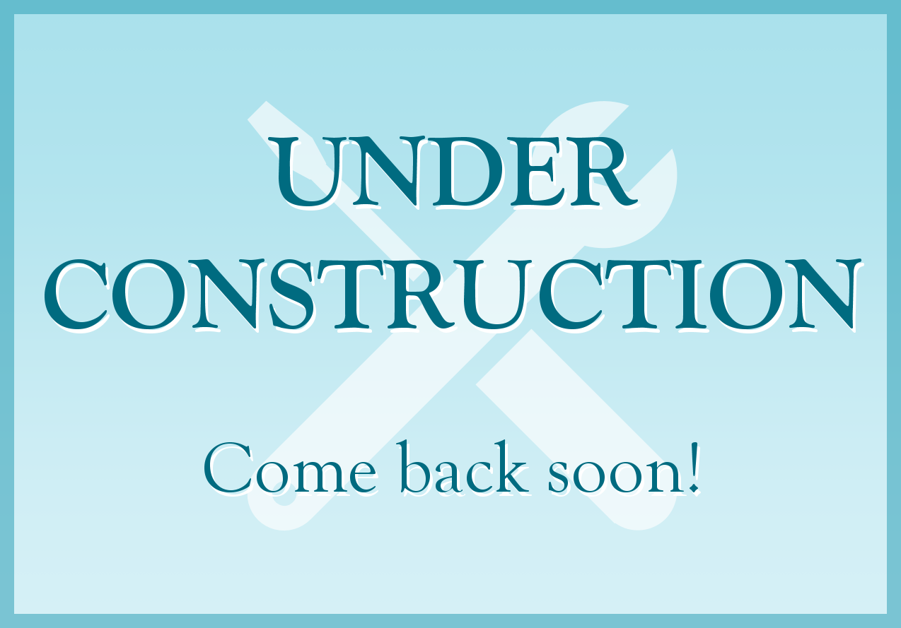

Advantages of Neurodivergence
Many employers don't see the value of neurodivergent and disabled workers. They see differences as potential liabilities without understanding that often, the strengths outweigh the needs.
Thinking and experiencing the world differently isn't always a bad thing. In fact, sometimes it helps people solve problems and develop unique strengths.
Here's a breakdown of common strengths in people with different disabilities.
ADHD
Many people know that people with ADHD often struggle to focus. Fewer people know about hyperfocus, an extreme state of focus that can occur when a person with ADHD becomes absorbed in a task.
Other strengths associated with ADHD include:
- Creativity
- Problem-solving
- Calm under pressure
- Generosity
Autism
While many people have heard stories of autistic savants or STEM wizards, the reality is that autistic people are a diverse group with a range of skills.
Common advantages of autistic brains include:
- Systems thinking
- Detail orientation
- Out-of-the-box thinking
- Clear written communication
Dyslexia
While dyslexia is traditionally thought of as a weakness, this doesn't explain the relatively high percentage of CEOs with the condition.
Some of the strengths related to dyslexia may come directly from being neurodivergent. A brain that works differently is likely to be above-average in some situations, after all. But others may come from life lessons related to struggling with reading. When you work harder, you learn more.
- Superior work ethic
- Creativity
- Problem-solving skills
- Noticing what's out of place
- Empathy
- Narrative reasoning and storytelling (Have you noticed how many dyslexic authors there are?)
Dyspraxia
Dyspraxia used to be called "clumsy child syndrome," but it's more than clumsiness and it doesn't disappear at age 18. Dyspraxia affects motor skills, but can also come with disorganization, social awkwardness, and emotional impacts.
But it also comes with advantages. Here are some common dyspraxic strengths according to SCIPS, Exceptional Individuals, Read and Spell, and Smart Kids with LD.
- High motivation and work ethic
- Resilience
- Creativity and originality
- Strategic thinking and problem-solving
- Leadership and interpersonal skills
- Caring
- High verbal intelligence
These strengths have been validated by academic research.
Some of these skills may be natural benefits of the dyspraxic brain. Others may come from a lifetime of working around a clumsy body and challenged mind.
Saving some sources
1 2